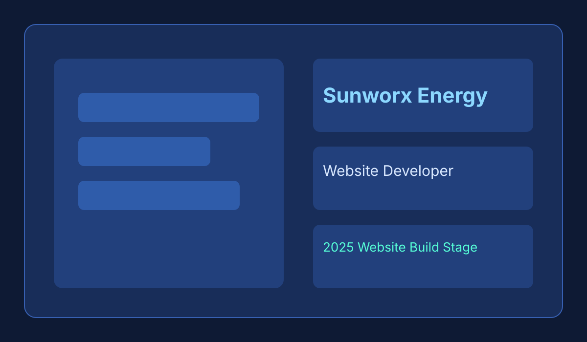
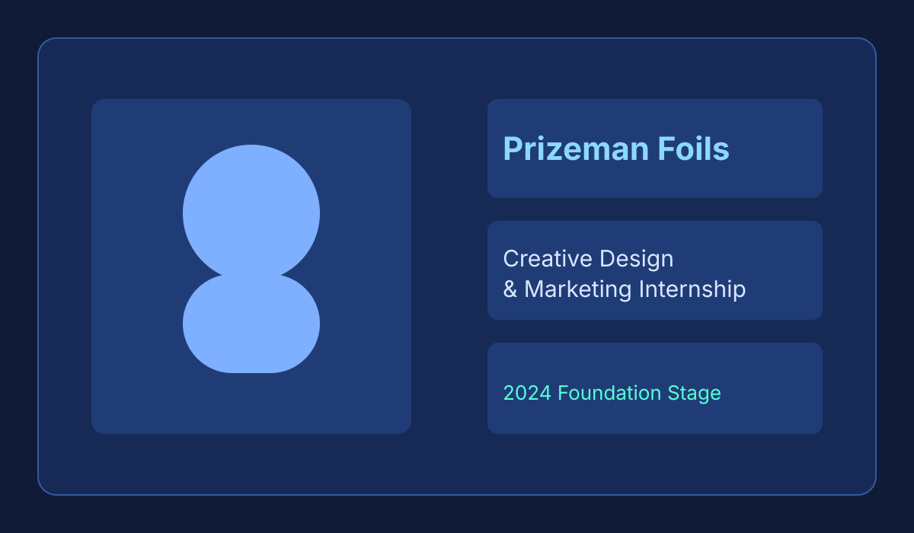

Engineering
Website Development
Architecting scalable, responsive web applications using modern frameworks. I focus on clean code, modular components, and exceptional user experiences.
Next.js / TypeScript / React / Node.js
Portfolio / Selection
Engineering
Architecting scalable, responsive web applications using modern frameworks. I focus on clean code, modular components, and exceptional user experiences.
Next.js / TypeScript / React / Node.js
Data Viz
Advanced data visualization project focused on translating complex datasets into intuitive, interactive web-based insights. Built with a focus on narrative clarity and user engagement.
HTML / D3.js / Data Analytics
View Project →Web App
A high-utility web application designed for speed and efficiency. Exploring modern frontend patterns and rapid-response user interfaces for streamlined digital workflows.
JavaScript / Frontend / UX
Repository →Solar Tech

Developed and optimized the digital flagship for a leading solar energy provider. Focused on high-conversion landing pages, SEO authority, and rapid performance metrics to dominate the renewable sector.
SEO / UI UX / Web Dev
Visit Site →Growth
Strategizing multi-channel campaigns that convert. I leverage automation and psychological triggers to build sustainable growth loops for renewable energy firms.
Lead Gen / Ads / Strategy
Optimization
Technical SEO audits and performance engineering. I ensure websites are not just fast, but visible, ranking for keywords that drive high-intent traffic.
GA4 / GTM / Technical SEO
Industrial

Engineered a digital platform for a specialized manufacturing firm. Bridged the gap between industrial craftsmanship and modern digital storytelling.
Branding / E-commerce / UX
Visit Site →Visuals
High-fidelity visual storytelling. Combining brand aesthetics with technical clarity to communicate complex value propositions to stakeholders.
Canva / UI Design / Copywriting
Process
Deep dive into business objectives, audience persona, and technical constraints.
Rapid prototyping and agile development with constant feedback loops.
Post-launch analysis and iterative optimization based on real user data.